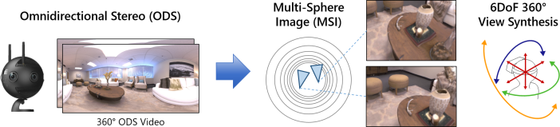
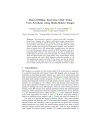
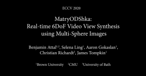

MatryODShka: Real-time 6DoF Video
View Synthesis using Multi-Sphere Images
Benjamin Attal, Selena Ling, Aaron Gokaslan,
Christian Richardt, and James Tompkin
European Conference on Computer Vision (ECCV) 2020—Oral Presentation

Abstract
We introduce a method to convert stereo 360° (omnidirectional stereo) imagery into a layered, multi-sphere image representation for six degree-of-freedom (6DoF) rendering. Stereo 360° imagery can be captured from multi-camera systems for virtual reality (VR), but lacks motion parallax and correct-in-all-directions disparity cues. Together, these can quickly lead to VR sickness when viewing content. One solution is to try and generate a format suitable for 6DoF rendering, such as by estimating depth. However, this raises questions as to how to handle disoccluded regions in dynamic scenes. Our approach is to simultaneously learn depth and disocclusions via a multi-sphere image representation, which can be rendered with correct 6DoF disparity and motion parallax in VR. This significantly improves comfort for the viewer, and can be inferred and rendered in real time on modern GPU hardware. Together, these move towards making VR video a more comfortable immersive medium.
Presentation Video
Video – 10 mins (MP4 100 MB) | PowerPoint slides (PPTX 100 MB)
Files
|  |  |
|
Paper PDF 11 MB | arXiv |
Supplemental Video MP4 100 MB |
Bibtex
@inproceedings{Attal:2020:ECCV,
author = {Benjamin Attal and Selena Ling and Aaron Gokaslan and
Christian Richardt and James Tompkin},
title = {{MatryODShka}: Real-time {6DoF} Video View Synthesis
using Multi-Sphere Images},
booktitle = {European Conference on Computer Vision (ECCV)},
month = aug,
year = {2020},
url = {https://visual.cs.brown.edu/matryodshka}
}
Code and Pre-trained Models
Working on it...
Acknowledgements
We thank Ana Serrano for help with RGB-D comparisons and Eliot Laidlaw for improving the Unity renderer. We thank Frédéric Devernay, Brian Berard, and an Amazon Research Award, and NVIDIA for a GPU donation. This work was supported by a Brown OVPR Seed Award, RCUK grant CAMERA (EP/M023281/1), and an EPSRC-UKRI Innovation Fellowship (EP/S001050/1).

|